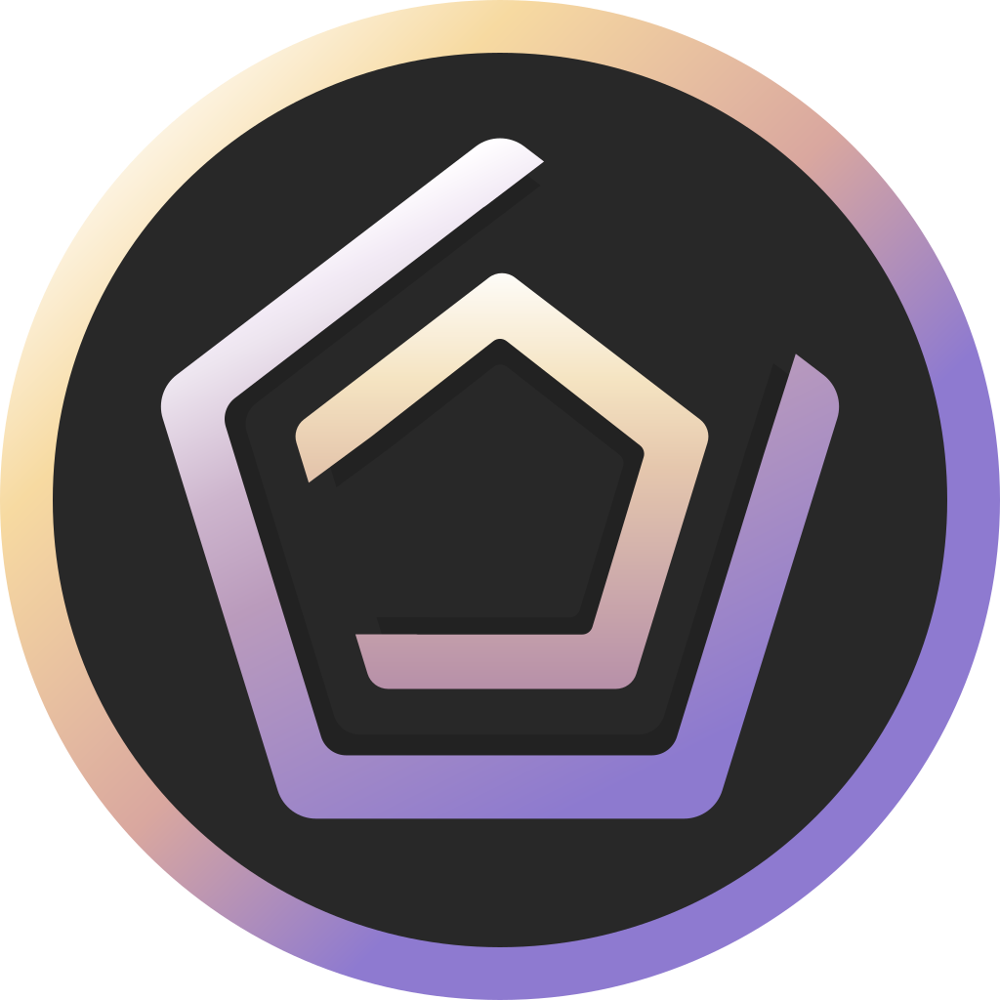

Mods
Geometry Dash has mod support.
Some sites offer multiple mods for download.
while
others only offer one mod menu.
most mod menus include features such as:
- Unlocking all levels
- Unlocking all icons
- Unlocking all colors
- Unlocking all achievements
- Unlocking all secret coins
- Noclip wich makes the olayer not take any damege
- Speedhack wich allows the player to change the game speed
- And many more

Geode.The most popular modding site for Geometry Dash